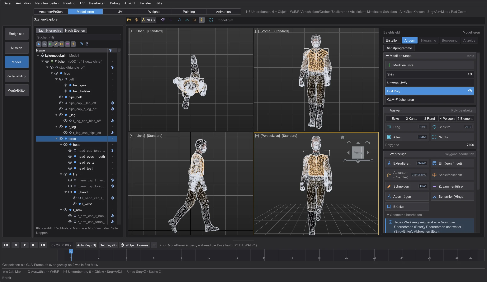
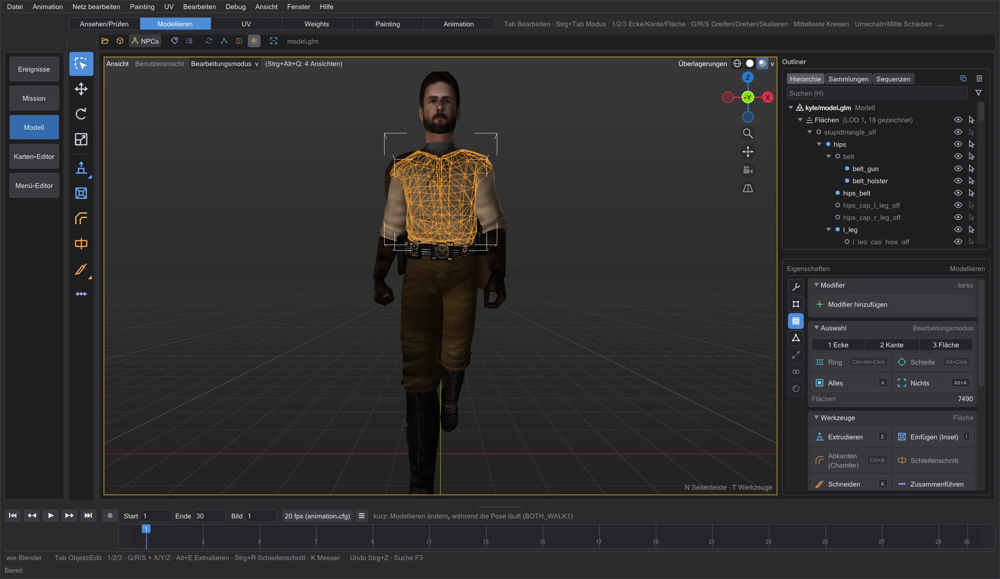
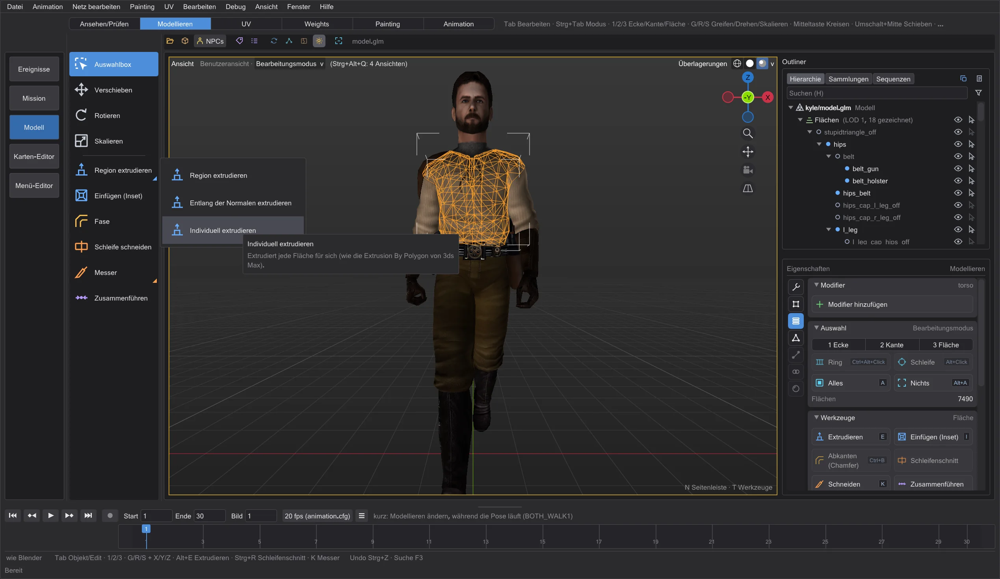
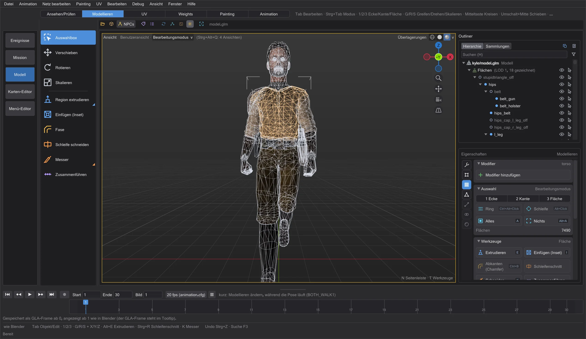
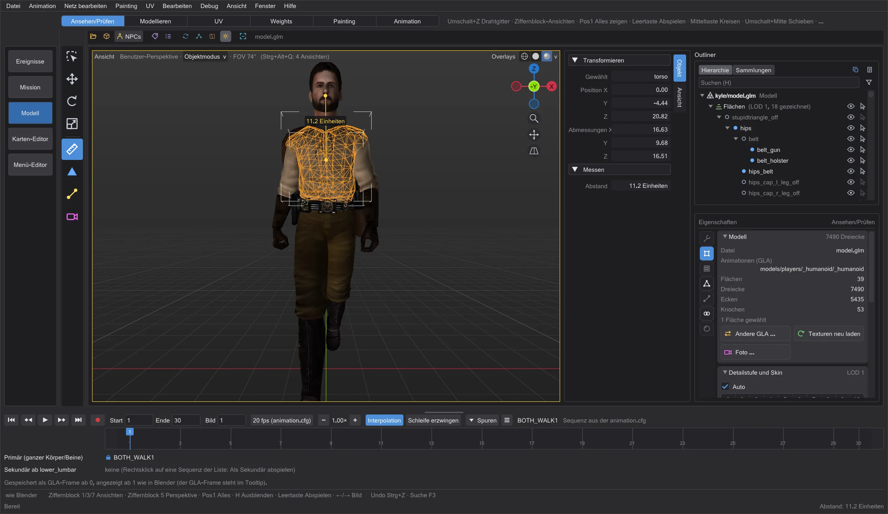
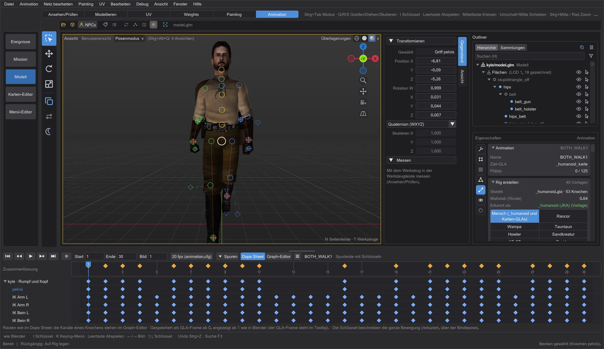

Model-Tab: der Aufbau wie Blender
Der Bedienmodus ändert nicht nur die Tasten, sondern auch das Aussehen: wie 3ds Max steht links der Szenen-Explorer und rechts das Befehlsfeld; wie Blender steht links die Werkzeugleiste, oben rechts der Outliner über den Eigenschaften, und N öffnet die Seitenleiste.


Werkzeugleiste (T)#
Wie Blender steht in der Spalte links die Werkzeugleiste. Oben stehen die vier Werkzeuge jedes Bereichs: Auswahlbox, Verschieben, Rotieren und Skalieren (sie wählen das Gizmo an der Auswahl; G, R und S gehen ohne). Unter einem Strich folgen die Werkzeuge des Bereichs: Ansehen/Prüfen Messen, Fläche wählen, Knochen wählen und Foto; Modellieren Region extrudieren, Einfügen (Inset), Fase, Schleife schneiden, Messer, Zusammenführen; UV Naht markieren, Abwickeln, Entspannen, Packen; Weights Pinsel, Weichzeichnen, Verlauf, Beispieleinfluss; Painting Pinsel, Füllen, Klonen, Verwischen, Maskieren; Animation Pose kopieren, Gespiegelt einfügen, Frames zu Schlüsseln reduzieren. Das gewählte Werkzeug ist hervorgehoben; der Tooltip nennt die Taste. T blendet die Leiste aus - ein kleiner Pfeil holt sie zurück - und T wieder ein. Jedes Werkzeug bleibt auch, wo es war: im Feld rechts, in den Menüs, in Alle Aktionen suchen und im Rechtsklick der Ansicht.

Werkzeuggruppen und Werkzeugnamen#
Die Werkzeuge heißen wie in Blender, in den Sprachen, in die Blender übersetzt ist, mit Blenders eigenen Wörtern. Wie in Blender bilden manche Werkzeuge eine Gruppe: ein kleines Dreieck in der Ecke des Knopfs zeigt es. Ein kurzer Klick nimmt das gezeigte Werkzeug; 0,2 Sekunden gedrückt halten oder vom Knopf wegziehen öffnet die Gruppe, und Loslassen auf einem Eintrag wählt ihn - der Knopf zeigt danach dieses Werkzeug. Modellieren hat die Gruppen Region extrudieren (mit Entlang der Normalen extrudieren und Individuell extrudieren) und Messer (mit Halbieren). Ein Rechtsklick auf die Werkzeugleiste bietet Werkzeugnamen zeigen: die Leiste wird breiter und zeigt neben jedem Werkzeug den Namen. Das Programm merkt sich die Wahl.
Wie in Blender lässt sich die Werkzeugleiste an ihrer rechten Kante breiter ziehen: bis 120 Punkte zeigt sie nur die Symbole, breiter die Werkzeugnamen daneben. Die Breite bleibt für den nächsten Start; ein Doppelklick auf die Kante bringt die schmale Leiste zurück. Werkzeugnamen zeigen im Rechtsklick-Menü zeigt die Namen weiter in jeder Breite.

Modus, Outliner und Eigenschaften#
Der Kopf der Ansicht nennt sie wie Blender, dahinter den Modus des Bereichs: Objektmodus in Ansehen/Prüfen, Bearbeitungsmodus in Modellieren und UV, Malereieinfluss, Texturmalerei und Posenmodus in Animation. Ein Klick auf den Modus öffnet die Wahl der Modi (wie Strg+Tab) und wechselt den Bereich. Rechts zeigt der Outliner denselben Baum wie der Szenen-Explorer, mit den Umschaltern in Spalten rechts; darunter zeigt der Editor Eigenschaften die Gruppen des Bereichs mit seiner Reiterspalte. Die Kante zwischen beiden lässt sich ziehen.

Seitenleiste (N) und Messen#
N öffnet die Seitenleiste rechts in der Ansicht. Der Reiter Gegenstand zeigt die Auswahl: bei einer Fläche Position und Abmessungen, bei einem Knochen oder einem Griff des Rigs Position und Drehung in der Pose, dazu die letzte Messung. Wie in Blender sind die Werte Zahlenfelder: nach links oder rechts ziehen ändert sie, ein Klick tippt einen Wert ein (Enter übernimmt, Esc bricht ab); Strg+Z nimmt eine Eingabe in einem Schritt zurück. Eine Fläche wandert bzw. skaliert damit, ein Griff des Rigs im Bereich Animation (Posenmodus) bewegt und dreht sich, so weit er es mit dem Gizmo kann; ein Knochen außerhalb des Posenmodus steht wie in Blender nur zum Ablesen da. Der Reiter Ansicht stellt das Sichtfeld ein und wechselt zwischen Perspektive und orthographisch. Das Werkzeug Messen misst auf dem Modell: zwei Punkte anklicken oder von einem zum anderen ziehen. Wie 3ds Max steht dasselbe Werkzeug in Alle Aktionen suchen und im Rechtsklick als Abstand messen. Jeder Bedienmodus behält seine eigene Anordnung der Fenster: was man wie Blender verschiebt, ausblendet oder herausnimmt, bleibt so, wenn man zu 3ds Max und zurück wechselt. Auswahl, Sequenz und Bild bleiben beim Wechsel erhalten.
Knochen in der Seitenleiste: für einen Knochen oder einen Griff des Rigs zeigt die Seitenleiste lokale Werte wie Blender - Position, Rotation und Skalierung bezogen auf die Ruhelage des Knochens (die Grundpose der .gla), in seinen eigenen Achsen. In der Ruhelage sind sie 0, eine Drehung ohne Drehung und 1. Die Rotation steht im Drehmodus des Knochens: Quaternion (WXYZ) (Blenders Vorgabe), eine der sechs Euler-Reihenfolgen oder Achsenwinkel; das Feld Rotationsmodus darunter stellt ihn für diesen Knochen um. Der Modus ändert nur, was man sieht und eintippt - das Spiel speichert die Pose als Matrizen. Die Skalierung steht nur zum Ablesen da: das Rig skaliert Knochen nicht.

Wie 3ds Max ist Knochen wählen ein Schalter wie Abstand messen: Alle Aktionen suchen und der Rechtsklick der Ansicht schalten es an und aus (im Menü mit Haken), und solange es an ist, steht es oben in der Ansicht. Q, W, E und R beenden es, ebenso der Wechsel von wie Blender zu wie 3ds Max.